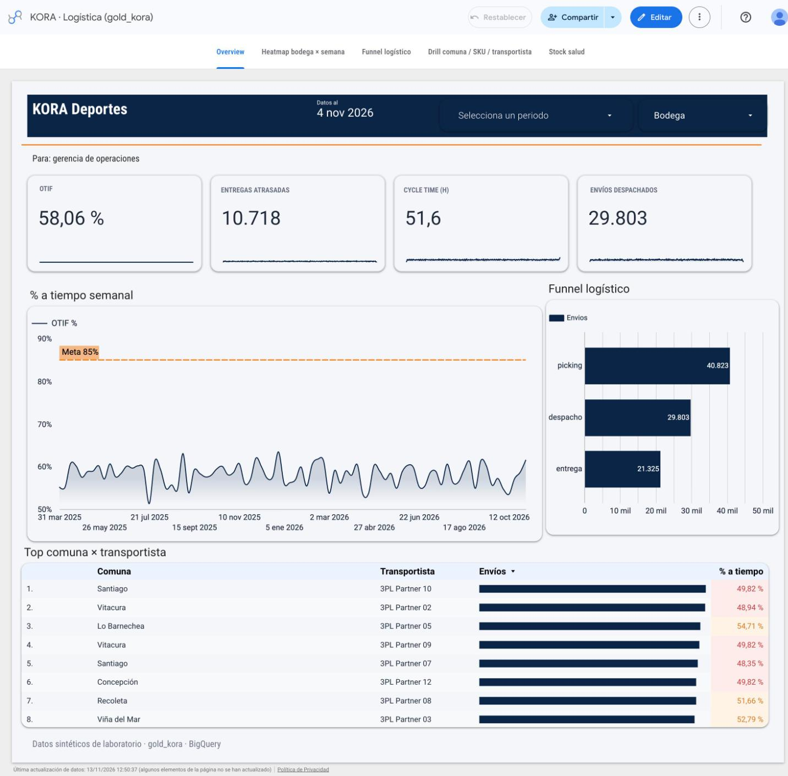
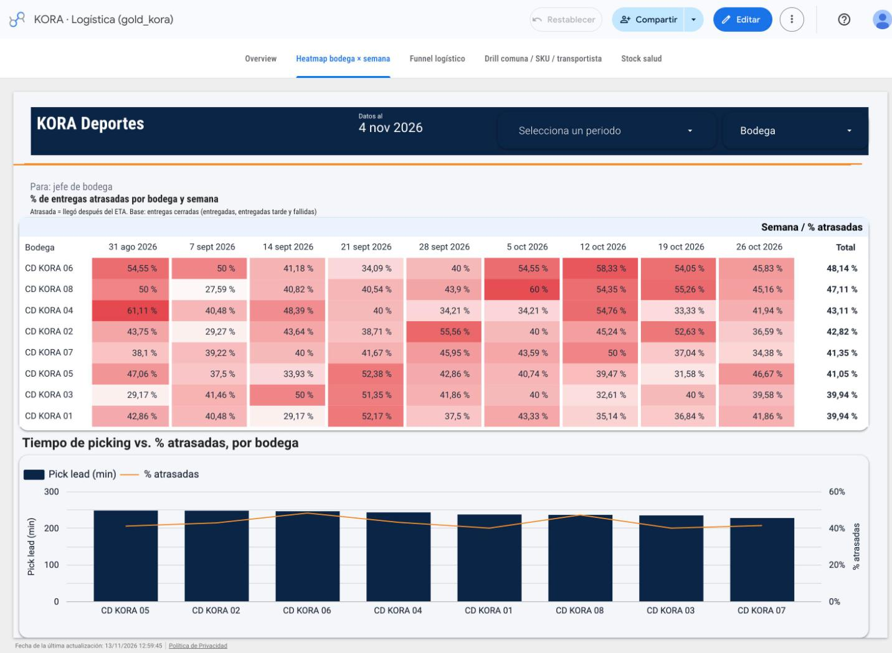
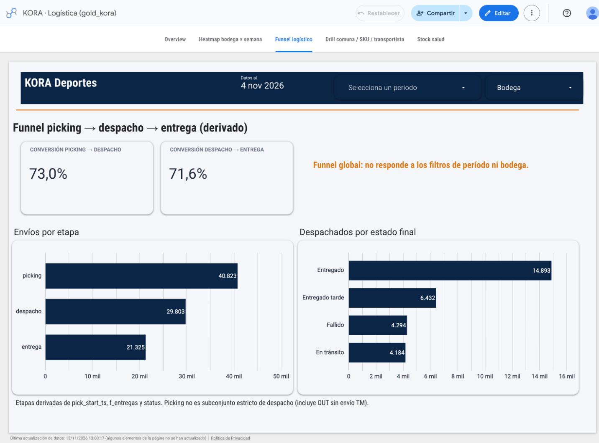
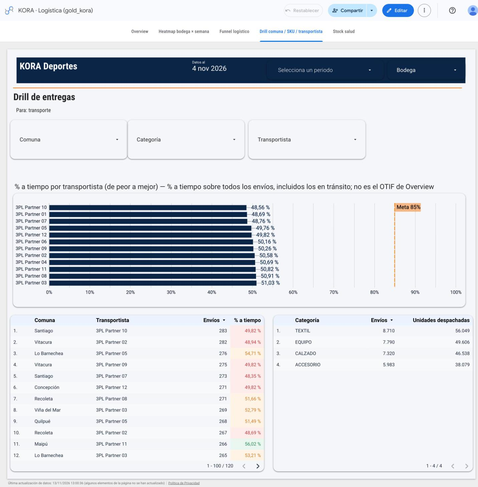
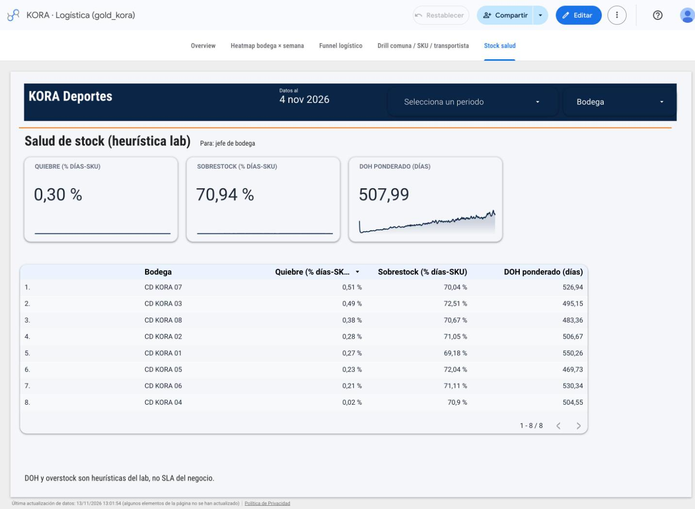

OTIF
58,06%
Parte On Time, frente a una meta demo de 85%
Cinco páginas en Data Studio para recuperar OTIF, acortar el cycle time y redistribuir stock, con números que se pueden auditar en una reunión de operaciones.

Cada vista está hecha para una decisión, no para decorar. La pregunta, la evidencia y la acción caben en la misma tarjeta.
¿A cuánto estamos del OTIF que queremos y dónde se acumulan los atrasos?
La portada resume el estado del servicio en un vistazo. Hoy el OTIF está lejos de la meta, con más de diez mil entregas fuera de ventana y un cycle time de más de dos días.

¿Qué bodega y qué semana concentran el atraso, y lo explica el picking?
El mapa muestra el % de entregas atrasadas por bodega y semana (SUM/SUM, con total por bodega). Debajo, el tiempo de picking por bodega contra su % de atraso, cada uno en su eje. Las 8 bodegas pickean en un tiempo parecido y atrasan parecido: la bodega no explica el atraso.

¿En qué etapa se cae el flujo entre picking, despacho y entrega?
Cada etapa se cuenta desde su propio hecho: picking no es un subconjunto de despacho. Los tres números muestran dónde se pierde volumen, no un embudo forzado.
Funnel global: la vista no trae fecha ni bodega, así que no responde a esos filtros.

¿Qué comuna y qué transportista arrastran el % a tiempo?
Los 12 transportistas quedan entre 48,56% y 51,03% a tiempo: con ~2.500 envíos cada uno, la diferencia está casi dentro del margen de error. Un atraso parejo en toda la red apunta a la promesa (ETA), no a un actor puntual. Este % cuenta todos los envíos, incluidos los en tránsito, por eso no es el OTIF de la portada. El conteo usa COUNT_DISTINCT(shipment_id) para no inflarlo por el fan-out shipment × SKU.

¿Dónde falta producto y dónde sobra, para redistribuir entre bodegas?
La página cruza existencias con la demanda, en % de días-SKU para comparar bodegas. El DOH es ponderado (stock usable total / demanda diaria total): el promedio de DOH por SKU daba 722,67 porque los SKU de baja rotación lo inflaban.
Heurística del lab: el stock sintético está sobredimensionado frente a la demanda; el umbral de 45 días se calibraría con supply.
De la portada al responsable, sin salir del reporte.
Acota la conversación al recorte que importa hoy, no al histórico completo.
En Overview queda claro si hay que recuperar servicio y de qué magnitud es el atraso.
En comuna, SKU o transportista aparece el responsable para renegociar o reasignar.
Las métricas del dashboard usan la misma regla que el SQL. Si no, el reporte mentiría.
Se agrega el conteo, no el porcentaje. Promediar otif_pct distorsiona el resultado.
SUM(n_otif) / SUM(n_intentadas_cerradas)En el drill, el grano shipment × SKU inflaría el conteo si se usara un COUNT simple.
COUNT_DISTINCT(shipment_id)Toda fila de bronze queda explicada. La cuarentena tiene causa: 160 filas fuera del modelo curado.
Partition pruning en f_stock_diario: el filtro por partición lee 10,7% del scan completo.
fecha_id
Un comando idempotente: make run
Picking no es un subconjunto de despacho. Cada etapa se cuenta desde su propio hecho, para no inventar una inclusión que el proceso no tiene.
La comuna viaja como dimensión degenerada en el hecho de entrega, junto al evento que se está midiendo.
El SKU se alcanza por shipment_id. En el drill se usa COUNT_DISTINCT para no inflar el conteo.